Le génie logiciel pour un ingénieur en Machine Learning
Kévin CAYE
Created: 2019-01-09 mer. 14:47
Qui je suis ?
- Ancien Ensimag (promotion 2014)
- Thèse en méthodes statistiques pour la génétique
- Prestataire de service chez Kaizen Solution
Plan et objectifs
Objectifs
Comprendre les outils et méthodes de développements utilisés en Machine Learning.
Plan
- Le paysage du Machine Learning
- Comment mener un projet en Machine Learning
1. Le paysage du machine learning
Qu'est ce que le Machine Learning ?
Approche traditionnelle
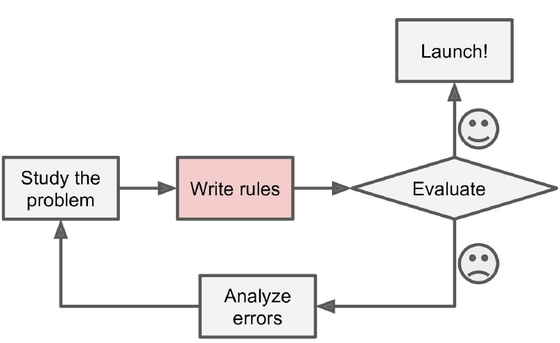Qu'est ce que le Machine Learning ?
Approche Machine Learning
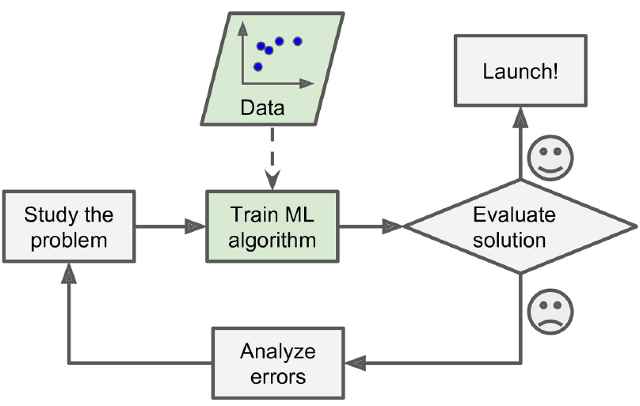Pourquoi utiliser le Machine Learning ?
Le machine Learning est parfait pour
- les problèmes résolus en énumérant un grand nombre de règles
- les problèmes très complexes ou trouver toutes les règles serait impossible
- les problèmes ou les règles peuvent changer, ou il faut s'adapter à de nouvelles données
Exemples
- filtre anti spam
- reconnaissance vocale
- détection de fautes sur des machines industrielles
Apprentissage supervisé
Un jeu de données labellisées
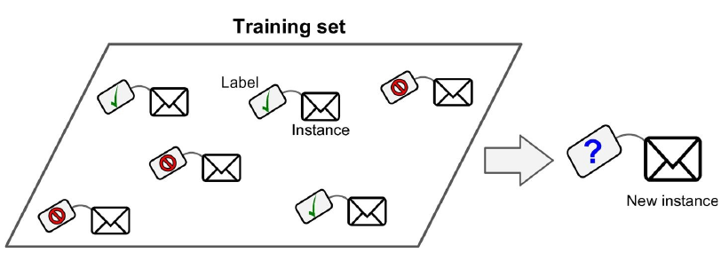Apprentissage supervisé
Régression
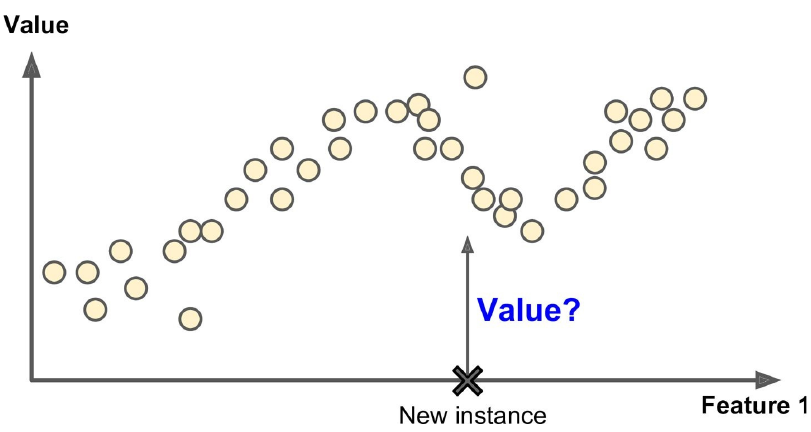Apprentissage supervisé
Exemples d'algorithme
- régression linéaire
- arbres de décision
- SVM (Support Vector Machine)
- réseaux de neurones
- et bien d'autres…
Apprentissage non supervisé
Un jeu de données NON labellisé
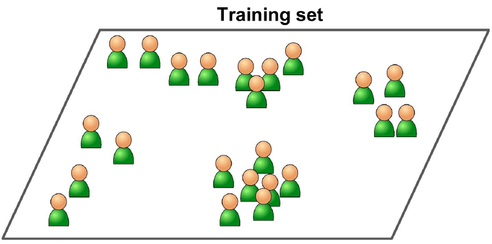Apprentissage non supervisé
Clustering
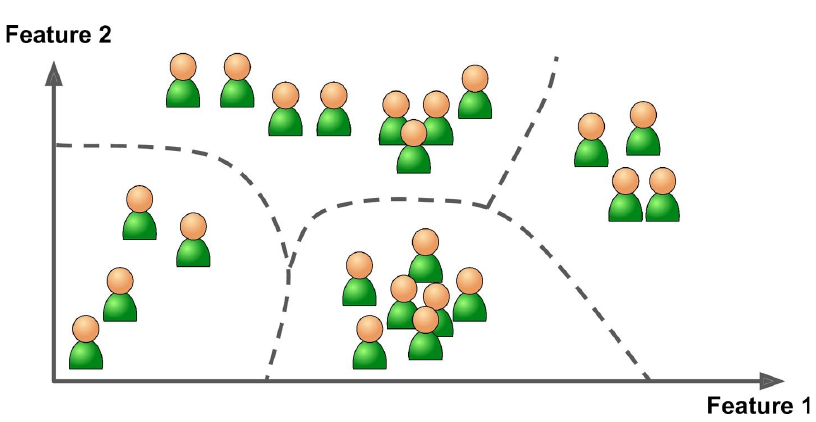Apprentissage non supervisé
Quelques exemples d'algorithme:
Clustering
- k-Means
Visualisation et réduction de la dimension
- Analyse en composant principale
Règle d'association
- Apriori
Apprentissage semi supervisé
Un jeu de données partiellement labellisé
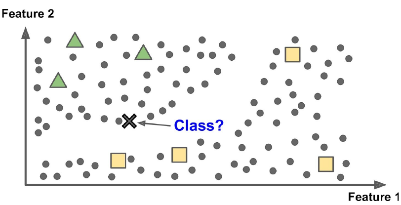2. Comment mener un projet Machine Learning ?
Objectif Prédire le prix de l'immobilier en Californie.
Projet Machine Learning: principales étapes
- Comprendre le problème
- Rassembler les données
- Découvrir et visualisé les données
- Créer les modèles
- Déployer le système
Créer un dossier pour le projet  !!
!!
├── Makefile <- avec des commandes comme make data ou make train ├── README.md <- Point de départ pour un nouvel arrivant sur le projet ├── data │ ├── external <- Données venant d'un tierce │ ├── interim <- Données transformées intermédiaires │ ├── processed <- Données finales, prètes pour les algos │ └── raw <- Les données d'origine, immuables ! │ ├── docs <- La documentation du projet (exemple: Sphinx ou MkDocs) │ ├── models <- Modèles entrainés │ ├── notebooks <- Les notebooks (exemple: Jupyter, Rmarkdown) │ ├── references <- Manuel, présentation, doc etc. │ ├── reports <- Rapports │ └── figures <- figures des rapports │ ├── requirements.txt <- Pour reproduire l'environnement de l'analyse, exemple │ généré avec `pip freeze > requirements.txt` │ ├── src <- Code source du projet (package python/R)
1. Comprendre le problème
Comprendre le problème
Pourquoi le client a besoin de cette algorithme ?
Le client veut savoir si il a intérêt à investir dans un quartier. Pour cela il lui faut le prix médian du quartier.
Comprendre le problème
Comment cet algorithme sera utilisé ? Dans quel environnent ?
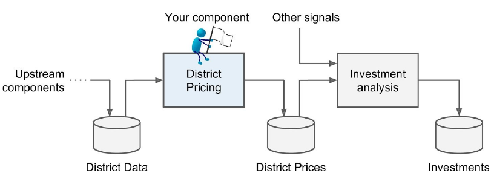Comprendre le problème
Existe t-il une solution actuellement ?
La valeur est estimée par des experts ou des règles compliquées.
Modélisation du problème
De quelle type d'algorithme d'apprentissage avons nous besoins ?
Machine Learning supervisé: en particulier il s'agit d'un problème de régression multiple (multivariate regression en anglais).
Choisir la métrique d'évaluation
Ça dépend du problème !
- Interprétable par le client ? \[RMSE = \sqrt{\frac{1}{n} \sum_{i =1}^{n} (Y_i - \hat{Y_i})^2}\]
- Plus dure a interpréter mais utile ? \[ R2 = 1 - \frac{\sum_{i =1}^{n} (Y_i - \hat{Y_i})^2}{\sum_{i =1}^{n} (Y_i - \bar{Y})^2} \]
2. Rassembler les données
Quelles données ?
Les données du client ?
Des données publiques ?
- par exemple la météo ?
Des données simulées ?
- très utile pour tester les algorithmes
- peut permettre d'agrandir le jeux de données
Quelles données ?
données dynamique ?
- Consommation énergétique d'un bâtiment
Pourront nous avoir accès à ces données quand l'algorithme sera en production ?
- données météo
Big data ?
- données de log de machine industriel
La natures des données ?
Données tabulaires
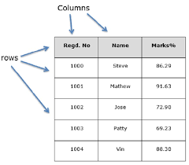Les données séquentielles
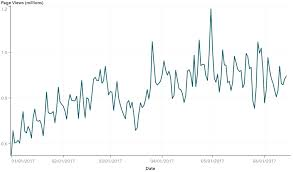Les images
Données textuelles
Structure de données: DataFrame
Avantages
- opération classique sur les base données
- représentation classique \(observations \times features\)
- facile a paralléliser
Library
- R:
dplyr - python:
pandas
Structure de données: Tensor
Avantages
- algorithmes fonctionnent bien avec ces structure de données
- parfait pour représenter des images ou des séries temporelles
- algèbre linéaire
Library
TensorFlowNumpy
Notre exemple : California Housing Prices dataset
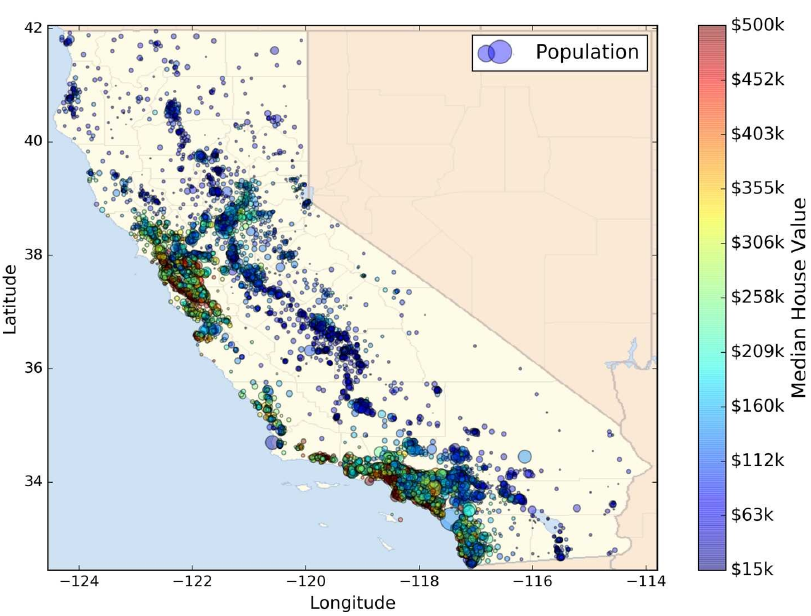- Données statique
- Small data: ça tient sur un ordinateur
3. Découvrir et visualisé les données
Choisir un langage programmation ?
R
- communauté centrée autour des data science
- état de l'art des méthodes statistique
python
- très grande communauté de développeurs, langage élégant
- vision par ordinateur
Choisir un paradigme de programmation ?
- programmation fonctionnelle
- programmation orientée objet
Programmation orienté objet
En quelques mots
- on décompose le problème en objets
- concept d'objets: attribues, héritage, interaction entre objets
- programmation impérative: modification de l'état internes des objets
Avantages
- permet de concevoir des logiciels complexes
Programmation orienté objet: exemple en python
On veux ajouter les éléments d'un tableau
class Array:
def __init__(self, data):
self.data = data
def add(self, t2):
for i in range(len(self.data)):
self.data[i] = t2.data[i] + self.data[i]
a1 = Array([1,2,3])
a2 = Array([3,8,6])
a1.add(a2)
print(a1.data)
[4, 10, 9]
Programmation fonctionnelle
En quelques mots
- on décompose le problème en fonctions
- concept de fonctions: fonctions pures, lamda-fonction, récursion
- programmation déclarative: composants logiciels indépendants du contexte et ne comportant aucun état interne.
Avantages
- plus simple a tester
- concept de pipeline de données
- parallélisation sur plusieurs machines/core
Programmation fonctionnelle: un exemple en python
On veux ajouter les éléments d'un tableau
def add(x, y):
return x + y
a1 = [1,2,3]
a2 = [3,8,6]
print(map(add, a1, a2))
[4, 10, 9]
Créer un environnement isolé et reproductible
Pourquoi ?
- Pour reproduire les résultats
- Facilite la mise en production
Exemple d'outils
- Python:
virtualenv - R et python:
conda - R: packrat
conda create -n california_env python=3.6 numpy pandas scikit-learn
Les notebooks
Exemples de notebook
- Jupyter notebook
- Rmarkdown

Notre exemple : visualisation des données
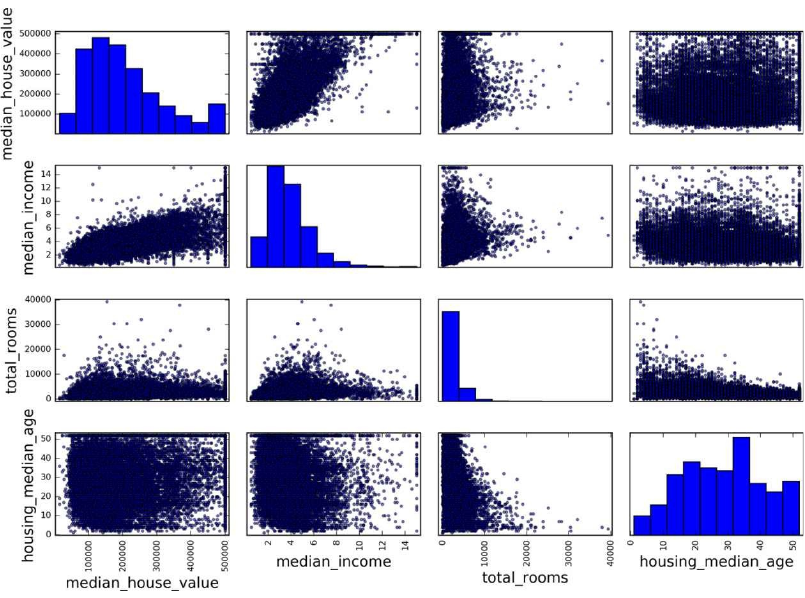4. Créer les modèles
Créer une stratégie d'évaluation
Données de test
- Ce sont des données qui n'ont jamais été vu par les algorithmes, typiquement \(20 \%\) des données.
- Évaluer l'erreur du modèle sur des nouvelle données
Données de validation
- Ce sont des données utilisé pour valider la phase d'apprentissage
- choisir les hyperparamètres
Créer une stratégie d'évaluation
Données structurées ?
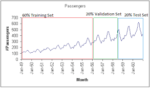Créer une stratégie d'évaluation
Notre exemples données sont stratifiées
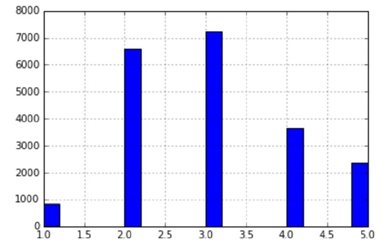Histogramme des catégories de loyers
Créer des modèles
C'est partie pour le code !
- Faire des packages: R et python sont très bien pour ca
- documenter les fonctions: R: Roxygen, python: docstring
TDD: Test Driven Development
- python:
pytest, R:testthat - c'est plus simple en programmation fonctionnelle car pas d'effets de bord
Modèle pour notre exemple
Régression linéaire ridge
- On modélise: \[ Y = X B^T + E \]
- On minimise \[ f(B) = || Y - X B^T ||^2 + beta ||B||^2 \]
Random forest

Évaluation et tuning des modèles par la validation croisée

Choix d'un modèle ?
Critères pour choisir
- Performance: CV, erreur sur les données de validations
- Facile à mettre en production:
- je peux l'intégrer sur la plate-forme de production ?
- Facile à déboguer
- si le modèle donne de mauvais résultats
- Interpretable
- je peux comprendre pourquoi cette prédiction ?
5. Déployer le système
Déployer le modèle
Maintenant qu'on a un modèle il faut l'intégrer dans le système du client !
Questions
- Comment ce connecté à la base de données ?
- Comment de RAM pour notre modèle ?
- Logging ?
- Comment passer à l'échelle ?
- …
Developpement - Operations
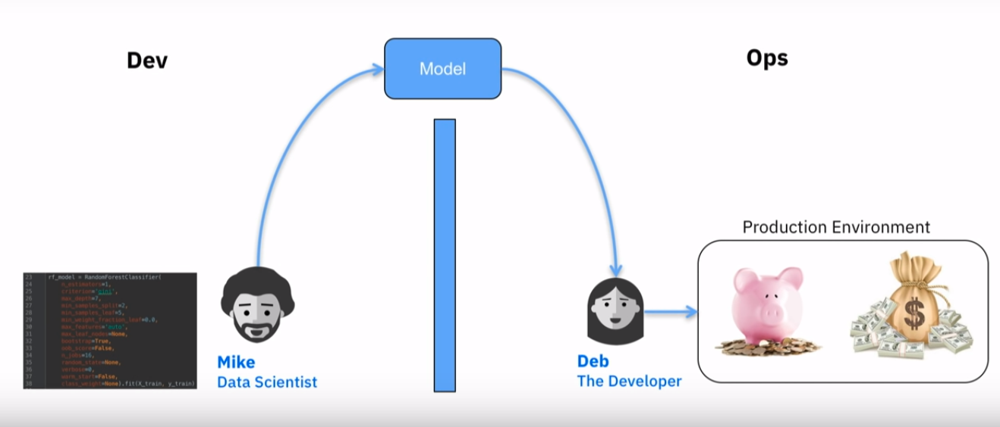Dev-Ops
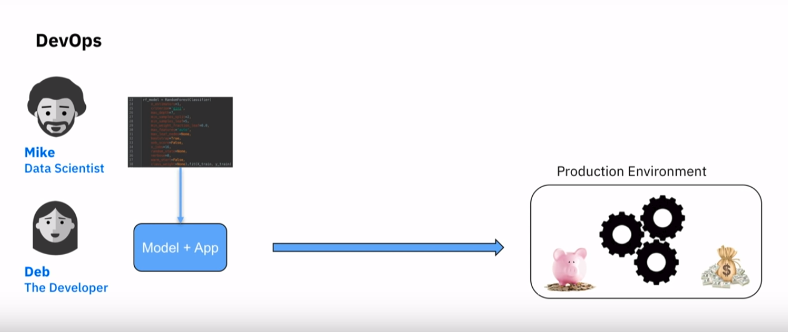Architecture orientée services
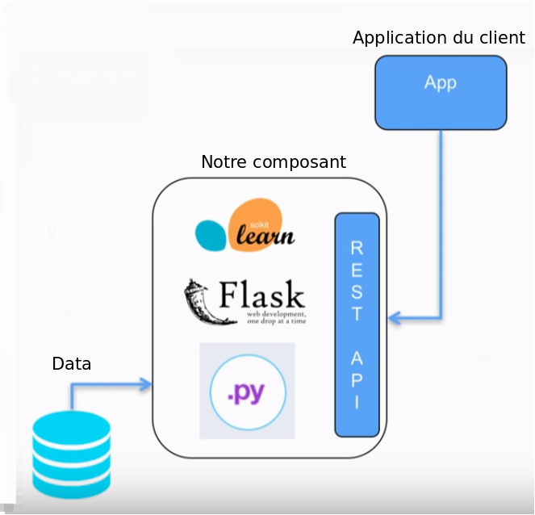Conclusion: Cross-industry standard process for data mining

Références